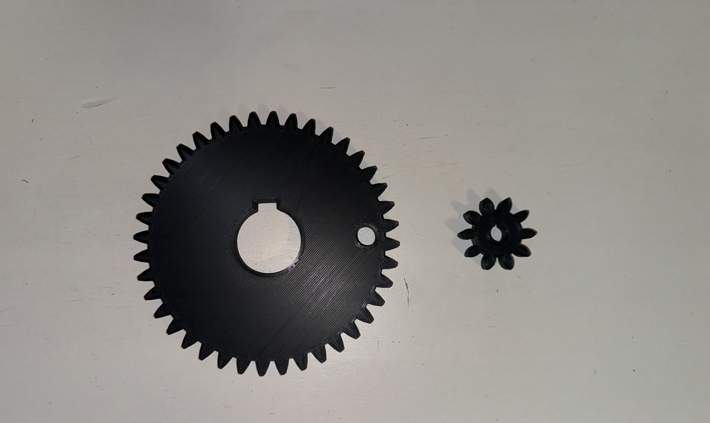
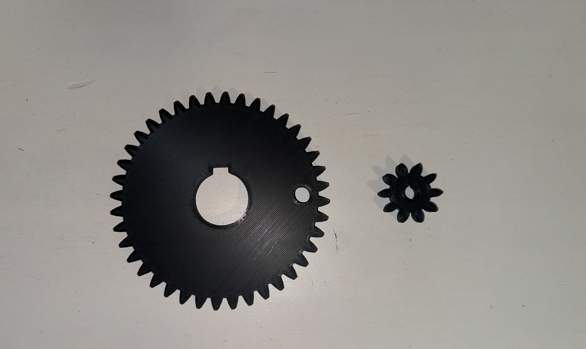

About the Project
In our third-year design project, we aimed to create a can crushing system powered by renewable energy for aluminum can recycling. We chose a Thermoelectric Generator (TEG) as our power source which utilized candles as its heat source.
Candles were used to simulate a geothermal heating source in a smaller scale. We were able to generate electricity using the Seebeck effect which utilizes two temperature extremes one being the side in contact with the candles and the other side in contact with an ice bath.
The TEG powered an electric motor, which operated a piston to crush aluminum cans. Our design process involved rapid prototyping, using 3D printing to iterate based on prototype performance. This approach helped in refining the design for the final production of the system's components.
In our project, I was responsible for assessing the fatigue lifetime under cyclic loading. As this was essential, particularly for components like gears exposed to repetitive stress. This analysis enabled us to estimate the durability of materials and parts against fatigue from constant, varying stresses, a key factor in ensuring the can crushing system's reliability and safety.
It guided us in selecting the most suitable materials and designing for longevity, and it informed our maintenance and replacement strategies to avert potential failures, thereby improving the system's overall lifespan and functionality.
Skill Acquired:
Fatigue Analysis, Material Selection, Maintenance Strategy Development, Renewable Energy System Design, Mechanical Design, Motion Study Development


 

Copyright © Muhammad.